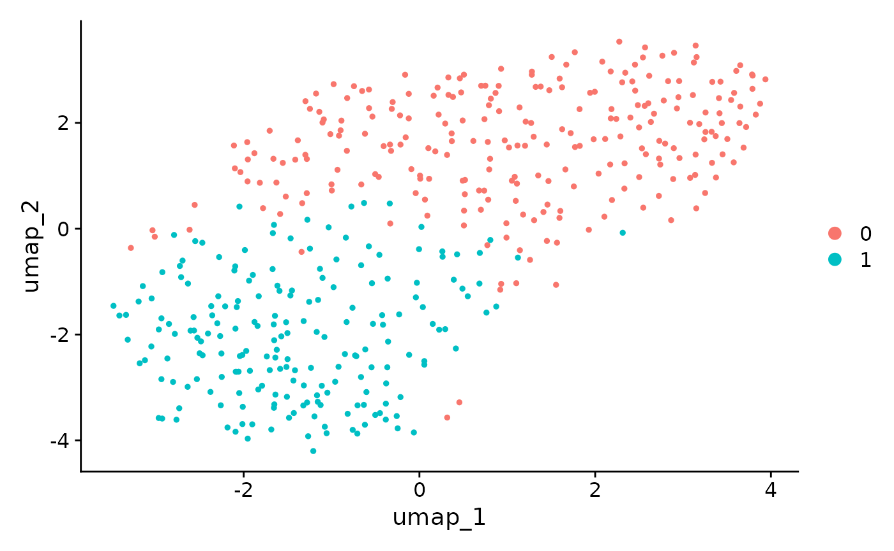

Perform ClusterDE on a PBMC dataset
Dongyuan Song
Bioinformatics IDP, University of California, Los Angelesdongyuansong@ucla.edu
12 October 2023
Source:vignettes/ClusterDE-PBMC.Rmd
ClusterDE-PBMC.Rmd
#tools::R_user_dir("ClusterDE", which="cache")
library(ClusterDE)
library(Seurat)
library(SingleCellExperiment)
library(ggplot2)
library(patchwork)
#library(SeuratData)
library(Matrix)Download data
The PBMC datasets are originally from SeuratData. We use
one of them (10x Chromium (v3) from PBMC1 replicate). We filtered out
some lowly epxressed genes to save computational time here.
Run the regular Seurat pipeline
We perform the default Seurat clustering. Note that in real data analysis, the cell type label is usually unknown.
RNGkind("L'Ecuyer-CMRG")
set.seed(123)
pbmc <- NormalizeData(object = pbmc)
pbmc <- FindVariableFeatures(object = pbmc)
pbmc <- ScaleData(object = pbmc)
#> Centering and scaling data matrix
pbmc <- RunPCA(object = pbmc)
#> PC_ 1
#> Positive: IL32, CCL5, TRBC2, TRAC, CD69, CST7, RORA, CTSW, SPOCK2, ITM2A
#> GZMM, CD247, TRBC1, C12orf75, IL7R, CD8A, CD2, LDHB, GZMA, CD7
#> NKG7, CD6, GZMH, CD8B, BCL11B, PRF1, LYAR, LTB, FGFBP2, TCF7
#> Negative: LYZ, FCN1, CLEC7A, CPVL, SERPINA1, SPI1, S100A9, AIF1, NAMPT, CSTA
#> CTSS, MAFB, MPEG1, NCF2, VCAN, FGL2, S100A8, TYMP, CST3, LST1
#> CYBB, CFD, FCER1G, SLC11A1, TGFBI, GRN, CD14, PSAP, SLC7A7, MS4A6A
#> PC_ 2
#> Positive: RPL10, EEF1A1, TMSB10, RPS2, RPS12, RPL13, RPS18, RPS23, RPLP1, TPT1
#> RPS8, IL32, S100A4, PFN1, RPLP0, NKG7, ARL4C, HSPA8, CST7, ZFP36L2
#> ANXA1, CTSW, S100A6, LDHA, CORO1A, CD247, GZMA, CALR, S100A10, GZMM
#> Negative: NRGN, PF4, SDPR, HIST1H2AC, MAP3K7CL, PPBP, GNG11, GPX1, TUBB1, SPARC
#> CLU, PGRMC1, FTH1, RGS18, MARCH2, TREML1, HIST1H3H, AP003068.23, NCOA4, ACRBP
#> TAGLN2, PRKAR2B, CD9, CA2, CMTM5, CTTN, MTURN, TMSB4X, HIST1H2BJ, TSC22D1
#> PC_ 3
#> Positive: CD79A, HLA-DQA1, MS4A1, LINC00926, IGHM, BANK1, IGHD, TNFRSF13C, HLA-DQB1, CD74
#> IGKC, HLA-DRA, BLK, CD83, CD37, CD22, ADAM28, JUND, NFKBID, HLA-DRB1
#> P2RX5, CD79B, VPREB3, IGLC2, FCER2, RPS8, LTB, RPS23, TCOF1, GNG7
#> Negative: CCL5, TMSB4X, SRGN, NKG7, ACTB, CST7, GZMH, FGFBP2, CTSW, PRF1
#> GZMA, GZMB, C12orf75, S100A4, ANXA1, KLRD1, NRGN, GNLY, GZMM, IL32
#> PF4, SDPR, PPBP, MYO1F, CD247, GAPDH, MAP3K7CL, HIST1H2AC, GNG11, TUBB1
#> PC_ 4
#> Positive: FCGR3A, GZMB, FGFBP2, GZMH, NKG7, HLA-DPA1, PRF1, HLA-DPB1, CST7, GNLY
#> KLRD1, HLA-DRB1, GZMA, CCL5, SPON2, ADGRG1, CTSW, ZEB2, PRSS23, IFITM2
#> CCL4, CD74, KLRF1, RHOC, MTSS1, CDKN1C, CD79B, CEP78, HLA-DQA1, CLIC3
#> Negative: IL7R, LEPROTL1, LTB, RCAN3, MAL, LEF1, TCF7, ZFP36L2, CAMK4, VIM
#> LDHB, NOSIP, JUNB, SLC2A3, TRABD2A, RGCC, SATB1, TNFAIP3, TMEM123, SOCS3
#> AQP3, BCL11B, NELL2, TNFRSF25, CD28, PABPC1, DNAJB1, TRAT1, OXNAD1, TRAC
#> PC_ 5
#> Positive: CDKN1C, HES4, CSF1R, CKB, ZNF703, TCF7L2, CTSL, MS4A7, PAG1, FAM110A
#> SIGLEC10, LRRC25, FCGR3A, LTB, RNASET2, CDH23, IL7R, RRAS, LINC01272, IFITM3
#> LST1, LILRB2, PILRA, RHOC, SLC2A6, PECAM1, CAMK1, TAGLN, IFI30, BID
#> Negative: VCAN, S100A12, S100A8, CD14, CSF3R, ITGAM, CST7, GZMB, MT-CO1, GNLY
#> KLRD1, PRF1, MS4A6A, GZMH, FGFBP2, CD93, EGR1, NKG7, S100A9, MT-CO3
#> IER3, THBS1, RNASE6, CLEC4E, MGST1, CTSW, SGK1, GZMA, RP11-1143G9.4, CH17-373J23.1
pbmc <- FindNeighbors(object = pbmc)
#> Computing nearest neighbor graph
#> Computing SNN
pbmc <- FindClusters(object = pbmc, resolution = 0.3)
#> Modularity Optimizer version 1.3.0 by Ludo Waltman and Nees Jan van Eck
#>
#> Number of nodes: 3222
#> Number of edges: 108605
#>
#> Running Louvain algorithm...
#> Maximum modularity in 10 random starts: 0.9363
#> Number of communities: 10
#> Elapsed time: 0 seconds
pbmc <- RunUMAP(object = pbmc, dims = 1:10)
#> Warning: The default method for RunUMAP has changed from calling Python UMAP via reticulate to the R-native UWOT using the cosine metric
#> To use Python UMAP via reticulate, set umap.method to 'umap-learn' and metric to 'correlation'
#> This message will be shown once per session
#> 18:15:41 UMAP embedding parameters a = 0.9922 b = 1.112
#> 18:15:41 Read 3222 rows and found 10 numeric columns
#> 18:15:41 Using Annoy for neighbor search, n_neighbors = 30
#> 18:15:41 Building Annoy index with metric = cosine, n_trees = 50
#> 0% 10 20 30 40 50 60 70 80 90 100%
#> [----|----|----|----|----|----|----|----|----|----|
#> **************************************************|
#> 18:15:41 Writing NN index file to temp file /tmp/RtmptRhvxT/file1b9617566ccd
#> 18:15:41 Searching Annoy index using 1 thread, search_k = 3000
#> 18:15:42 Annoy recall = 100%
#> 18:15:43 Commencing smooth kNN distance calibration using 1 thread with target n_neighbors = 30
#> 18:15:44 Initializing from normalized Laplacian + noise (using irlba)
#> 18:15:45 Commencing optimization for 500 epochs, with 126446 positive edges
#> 18:15:49 Optimization finished
p1 <- DimPlot(object = pbmc, reduction = "umap", label = TRUE) + ggtitle("Clustering result") + NoLegend()
p2 <- DimPlot(object = pbmc, reduction = "umap", group.by = "CellType", label = TRUE) + NoLegend()
p1 + p2
In this vignette, we are interested in cluster 2 vs 8, which
approximately represent CD14+/CD16+ monocytes. Please note that
ClusterDE is designed for 1 vs 1 comparison. Therefore, users may (1)
choose the two interested clusters manually based on their knowledge or
(2) use the two closest clusters from computation (e.g.,
BuildClusterTree in Seurat).
pbmc <- BuildClusterTree(pbmc)
PlotClusterTree(pbmc)We perform the DE test between cluster 2 and 8. We subset the cluster
2 and 8 (pbmc_sub).
pbmc_sub <- subset(x = pbmc, idents = c(2, 8))
original_markers <- FindMarkers(pbmc_sub,
ident.1 = 2,
ident.2 = 8,
min.pct = 0,
logfc.threshold = 0)
#> For a more efficient implementation of the Wilcoxon Rank Sum Test,
#> (default method for FindMarkers) please install the limma package
#> --------------------------------------------
#> install.packages('BiocManager')
#> BiocManager::install('limma')
#> --------------------------------------------
#> After installation of limma, Seurat will automatically use the more
#> efficient implementation (no further action necessary).
#> This message will be shown once per sessionGenerate synthetic null data
We first generate the synthetic null data based on the target data
(real subset data, pbmc_sub, which contains the two
clusters you are interested in). You can increase the number of cores to
speed it up.
count_mat <- GetAssayData(object = pbmc_sub, slot = "counts")
set.seed(1234)
system.time(synthetic_null <- ClusterDE::constructNull(count_mat, nCores = 2, fastVersion = TRUE))
#> user system elapsed
#> 107.129 35.044 74.955We perform the same pipeline as we did for target data. Please note we need two clusters here, too. This is straightforward for clustering method with predefined cluster numbers, e.g., K-means. For louvain clustering used in Seurat you may manually adjust the resolution parameter so that we still get two clusters.
pbmc_null <- CreateSeuratObject(counts = synthetic_null)
set.seed(123)
pbmc_null <- NormalizeData(object = pbmc_null)
pbmc_null <- FindVariableFeatures(object = pbmc_null)
pbmc_null <- ScaleData(object = pbmc_null)
#> Centering and scaling data matrix
pbmc_null <- RunPCA(object = pbmc_null)
#> PC_ 1
#> Positive: RPS19, RPS27, RPL41, AIF1, LST1, B2M, RPL10, COTL1, FTH1, RPL19
#> RPL8, RPL11, PFN1, HLA-C, NACA, YBX1, EEF1A1, FTL, FCER1G, HLA-B
#> RPL7A, TMSB10, IFITM3, RPL14, RPL15, FAU, CORO1A, RPS2, TMSB4X, RNASET2
#> Negative: VCAN, S100A8, SLC2A3, FOS, S100A9, S100A12, CD14, LYZ, ITGAM, CSF3R
#> CD36, SELL, NCF1, MS4A6A, RGS2, DUSP6, GPX1, IRF2BP2, FPR1, FOSB
#> NR4A2, THBS1, ALOX5AP, CCR1, RNASE6, RP11-1143G9.4, ZFP36L1, NRGN, CYP1B1, CLEC4E
#> PC_ 2
#> Positive: CDKN1C, RHOC, IFITM2, FCGR3A, KLF2, POU2F2, PAG1, HES4, MS4A7, SLC2A6
#> LRRC25, PECAM1, RRAS, FAM110A, CYTIP, LYST, SSH2, DRAP1, LYL1, CSF1R
#> IFITM3, MTSS1, SPN, HN1, UNC119, SSBP4, SIGLEC10, SNX9, SOD1, BID
#> Negative: TPT1, RPS13, GAPDH, LYZ, GPX1, RPS18, RPS3A, RPL18A, VIM, RPL32
#> RPL3, S100A10, RPS23, RPS6, RPL6, S100A9, RPS8, GRN, EEF1A1, RPLP0
#> CD14, LGALS3, RPL34, RPL30, AP1S2, FCN1, FOS, RPL23A, RPS12, RPS4X
#> PC_ 3
#> Positive: HMGB2, RGS2, RPS26, IRS2, TNFSF10, RNF144B, S100A12, CBX4, RPL34, RPL14
#> S100A9, SOD2, S100A8, ACSL1, SELL, SOX4, ALOX5AP, EXOC1, EGR1, RPL30
#> RPS3, RPS12, VCAN, CD48, FAM53C, CLEC2B, RPL12, GNG2, SARAF, SERTAD1
#> Negative: HLA-DRA, CPVL, HLA-DPA1, HLA-DPB1, MAP3K8, HLA-DRB1, MARCKS, CD74, XYLT1, EZR
#> CST3, HLA-DQB1, HMOX1, CD300E, NAAA, BHLHE40, CD63, DUSP6, CDKN1A, RGCC
#> MAFB, APOBEC3A, HLA-DMA, DOK2, EMP3, RUNX3, ID2, ZMIZ1, LGALS3, CD93
#> PC_ 4
#> Positive: PLBD1, PLAC8, S100A8, S100A9, CES1, SLA, S100A12, PARP14, SELL, PPP3R1
#> SOD2, MAFB, FCN1, IRF7, BCL2A1, LY86, SPTLC2, OSM, VCAN, LYN
#> TUBA4A, AP1S2, LYZ, MBD2, OAS1, BLOC1S1, FPR1, APOBEC3A, RP11-1143G9.4, CD14
#> Negative: RPL34, CDC123, RPS23, RPL12, HLA-DMB, RPL32, ANKRD36C, RPL14, RPL30, LPAR6
#> EEF1B2, AHR, RPS4X, UBE2D4, TNNI2, HLA-DPB1, HIST1H1C, RSPRY1, HLA-DPA1, SNTB1
#> HMGN1, RPS3A, MGAT4B, RPS12, FAM78A, RPS18, ICOSLG, CKS1B, B9D2, DTYMK
#> PC_ 5
#> Positive: S100A11, ACTB, GALNS, PLPPR2, FTH1, FTL, B3GALT6, TFAP4, ARPC3, DUSP10
#> LCK, RALGDS, ZNF281, TYROBP, COTL1, ACTG1, GAPDH, S100A12, PLAUR, CXCL8
#> BCL2A1, S100A4, NSFL1C, LILRB2, PLBD1, IL1RAP, CES1, PDE4B, FCER1G, APH1B
#> Negative: IFI44, STOM, ZC3HAV1, ARL4C, ATM, IFI44L, APOL6, MYLIP, MX1, AKNA
#> TNFAIP3, PARP14, STAT1, C5orf24, CCPG1, ZCCHC2, SNRNP200, MZT2B, DDX6, MGAT1
#> CMPK2, PRAM1, SHISA5, UTRN, TMEM70, FBXO7, DNAJC8, MIS18BP1, B2M, MECP2
pbmc_null <- FindNeighbors(object = pbmc_null)
#> Computing nearest neighbor graph
#> Computing SNN
pbmc_null <- FindClusters(object = pbmc_null, resolution = 0.3)
#> Modularity Optimizer version 1.3.0 by Ludo Waltman and Nees Jan van Eck
#>
#> Number of nodes: 453
#> Number of edges: 17874
#>
#> Running Louvain algorithm...
#> Maximum modularity in 10 random starts: 0.7632
#> Number of communities: 2
#> Elapsed time: 0 seconds
pbmc_null <- RunUMAP(object = pbmc_null, dims = 1:10)
#> 18:17:52 UMAP embedding parameters a = 0.9922 b = 1.112
#> 18:17:52 Read 453 rows and found 10 numeric columns
#> 18:17:52 Using Annoy for neighbor search, n_neighbors = 30
#> 18:17:52 Building Annoy index with metric = cosine, n_trees = 50
#> 0% 10 20 30 40 50 60 70 80 90 100%
#> [----|----|----|----|----|----|----|----|----|----|
#> **************************************************|
#> 18:17:52 Writing NN index file to temp file /tmp/RtmptRhvxT/file1b962d300176
#> 18:17:52 Searching Annoy index using 1 thread, search_k = 3000
#> 18:17:52 Annoy recall = 100%
#> 18:17:53 Commencing smooth kNN distance calibration using 1 thread with target n_neighbors = 30
#> 18:17:54 Initializing from normalized Laplacian + noise (using irlba)
#> 18:17:54 Commencing optimization for 500 epochs, with 18194 positive edges
#> 18:17:55 Optimization finished
DimPlot(object = pbmc_null, reduction = "umap")
We perform the DE test on synthetic null data.
null_markers <- FindMarkers(pbmc_null,
ident.1 = 0,
ident.2 = 1,
min.pct = 0,
logfc.threshold = 0)We extract the p-values from both original data and synthetic null
data, then use ClusterDE to “compare” them.
original_pval <- original_markers$p_val
names(original_pval) <- rownames(original_markers)
null_pval <- null_markers$p_val
names(null_pval) <- rownames(null_markers)
res <- ClusterDE::callDE(original_pval, null_pval, nlogTrans = TRUE)You can check the summary table. The genes are ranked by “contrast score (cs)”.
head(res$summaryTable)
#> # A tibble: 6 × 5
#> Gene target null cs q
#> <chr> <dbl> <dbl> <dbl> <dbl>
#> 1 CDKN1C 67.5 12.9 54.6 0.0476
#> 2 CD79B 53.1 0.0802 53.1 0.0476
#> 3 FCGR3A 79.0 27.1 51.9 0.0476
#> 4 CKB 44.6 0.916 43.6 0.0476
#> 5 RHOC 65.8 23.0 42.8 0.0476
#> 6 PLD4 36.2 0.942 35.2 0.0476To compare the result from the naive Seurat pipeline and ClusterDE, we first visualize the top 6 DE genes from Seurat. Genes LST1 and RPS19 are both highly expressed in two clusters. In addition, RPS19 is reported as a stable housekeeping genes in several studies. Note that it does not mean the expression levels of LST1 and RPS19 are the same between the two cell types. It means that they are not good cell type markers. Philosophically speaking, it means that conditional on the two clusters are obtained by clustering algorithm, LST1 and RPS19 are less likely to be the cell type markers between the two cell types.
FeaturePlot(pbmc[ , pbmc$seurat_clusters %in% c(2, 8)], features = c(rownames(original_markers)[1:6]), ncol = 3)In contrast, the genes from ClusterDE do not have LST1 and RPS19 anymore.
FeaturePlot(pbmc[, pbmc$seurat_clusters %in% c(2, 8)], features = c(res$summaryTable$Gene[1:6]), ncol = 3)
Session information
sessionInfo()
#> R version 4.3.1 (2023-06-16)
#> Platform: x86_64-pc-linux-gnu (64-bit)
#> Running under: Ubuntu 22.04.3 LTS
#>
#> Matrix products: default
#> BLAS: /usr/lib/x86_64-linux-gnu/openblas-pthread/libblas.so.3
#> LAPACK: /usr/lib/x86_64-linux-gnu/openblas-pthread/libopenblasp-r0.3.20.so; LAPACK version 3.10.0
#>
#> Random number generation:
#> RNG: L'Ecuyer-CMRG
#> Normal: Inversion
#> Sample: Rejection
#>
#> locale:
#> [1] LC_CTYPE=C.UTF-8 LC_NUMERIC=C LC_TIME=C.UTF-8
#> [4] LC_COLLATE=C.UTF-8 LC_MONETARY=C.UTF-8 LC_MESSAGES=C.UTF-8
#> [7] LC_PAPER=C.UTF-8 LC_NAME=C LC_ADDRESS=C
#> [10] LC_TELEPHONE=C LC_MEASUREMENT=C.UTF-8 LC_IDENTIFICATION=C
#>
#> time zone: UTC
#> tzcode source: system (glibc)
#>
#> attached base packages:
#> [1] stats4 stats graphics grDevices utils datasets methods
#> [8] base
#>
#> other attached packages:
#> [1] Matrix_1.6-1.1 patchwork_1.1.3
#> [3] ggplot2_3.4.3 SingleCellExperiment_1.22.0
#> [5] SummarizedExperiment_1.30.2 Biobase_2.60.0
#> [7] GenomicRanges_1.52.1 GenomeInfoDb_1.36.4
#> [9] IRanges_2.34.1 S4Vectors_0.38.2
#> [11] BiocGenerics_0.46.0 MatrixGenerics_1.12.3
#> [13] matrixStats_1.0.0 SeuratObject_4.1.4
#> [15] Seurat_4.4.0 ClusterDE_0.99.1
#> [17] BiocStyle_2.28.1
#>
#> loaded via a namespace (and not attached):
#> [1] RColorBrewer_1.1-3 jsonlite_1.8.7 magrittr_2.0.3
#> [4] spatstat.utils_3.0-3 farver_2.1.1 rmarkdown_2.25
#> [7] zlibbioc_1.46.0 fs_1.6.3 ragg_1.2.6
#> [10] vctrs_0.6.3 ROCR_1.0-11 memoise_2.0.1
#> [13] spatstat.explore_3.2-3 RCurl_1.98-1.12 S4Arrays_1.0.6
#> [16] htmltools_0.5.6.1 sass_0.4.7 sctransform_0.4.0
#> [19] parallelly_1.36.0 KernSmooth_2.23-21 bslib_0.5.1
#> [22] htmlwidgets_1.6.2 desc_1.4.2 ica_1.0-3
#> [25] plyr_1.8.9 plotly_4.10.2 zoo_1.8-12
#> [28] cachem_1.0.8 igraph_1.5.1 mime_0.12
#> [31] lifecycle_1.0.3 pkgconfig_2.0.3 R6_2.5.1
#> [34] fastmap_1.1.1 GenomeInfoDbData_1.2.10 fitdistrplus_1.1-11
#> [37] future_1.33.0 shiny_1.7.5 digest_0.6.33
#> [40] colorspace_2.1-0 rprojroot_2.0.3 tensor_1.5
#> [43] irlba_2.3.5.1 kde1d_1.0.5 textshaping_0.3.7
#> [46] labeling_0.4.3 progressr_0.14.0 fansi_1.0.5
#> [49] spatstat.sparse_3.0-2 httr_1.4.7 polyclip_1.10-6
#> [52] abind_1.4-5 compiler_4.3.1 withr_2.5.1
#> [55] MASS_7.3-60 DelayedArray_0.26.7 tools_4.3.1
#> [58] lmtest_0.9-40 ape_5.7-1 httpuv_1.6.11
#> [61] future.apply_1.11.0 goftest_1.2-3 glue_1.6.2
#> [64] nlme_3.1-162 promises_1.2.1 grid_4.3.1
#> [67] Rtsne_0.16 cluster_2.1.4 reshape2_1.4.4
#> [70] generics_0.1.3 gtable_0.3.4 spatstat.data_3.0-1
#> [73] tidyr_1.3.0 data.table_1.14.8 XVector_0.40.0
#> [76] sp_2.1-0 utf8_1.2.3 spatstat.geom_3.2-5
#> [79] RcppAnnoy_0.0.21 ggrepel_0.9.3 RANN_2.6.1
#> [82] pillar_1.9.0 stringr_1.5.0 later_1.3.1
#> [85] splines_4.3.1 dplyr_1.1.3 lattice_0.21-8
#> [88] survival_3.5-5 deldir_1.0-9 tidyselect_1.2.0
#> [91] miniUI_0.1.1.1 pbapply_1.7-2 knitr_1.44
#> [94] gridExtra_2.3 bookdown_0.35 scattermore_1.2
#> [97] xfun_0.40 stringi_1.7.12 lazyeval_0.2.2
#> [100] yaml_2.3.7 evaluate_0.22 codetools_0.2-19
#> [103] tibble_3.2.1 BiocManager_1.30.22 cli_3.6.1
#> [106] uwot_0.1.16 xtable_1.8-4 reticulate_1.32.0
#> [109] systemfonts_1.0.5 munsell_0.5.0 jquerylib_0.1.4
#> [112] Rcpp_1.0.11 globals_0.16.2 spatstat.random_3.1-6
#> [115] png_0.1-8 rngWELL_0.10-9 parallel_4.3.1
#> [118] ellipsis_0.3.2 randtoolbox_2.0.4 assertthat_0.2.1
#> [121] pkgdown_2.0.7 mvnfast_0.2.8 bitops_1.0-7
#> [124] listenv_0.9.0 viridisLite_0.4.2 scales_1.2.1
#> [127] ggridges_0.5.4 crayon_1.5.2 leiden_0.4.3
#> [130] purrr_1.0.2 rlang_1.1.1 rvinecopulib_0.6.3.1.1
#> [133] cowplot_1.1.1